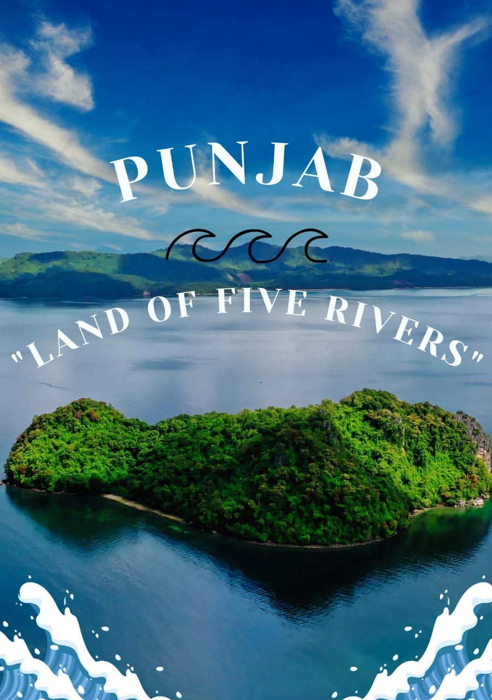

Punjab
"A LAND OF FIVE RIVERS"

The state of Punjab is known for numerous reasons. It is known as 'the land of five rivers' and because of the fertile lands found here, it is also amongst one of the most ancient civilizations in the world. This place is rich with culture and full of beauty that you should experience first-hand.Here we go with some Top 10 outstanding tourist spots in Punjab.
Islamabad
The well known and capital city of Pakistan 'Islamabad' is known for the presence of several parks and forests, including the Margalla Hills National Park and the Shakarparian.It is home to several landmarks, with the most notable one being the Faisal Mosque, the largest mosque in South Asia and the fifth-largest in the world.Centaurus and Monument are aslo very well known and most visited places of islamabad.
Katas Raj Temple
Among the top attraction Pakistan has to offer in the Punjab region, this one is located about 16 km from Kallar Kahar, in the District of Chakwal. It is about 40 km from Chakwal city. This place is a historic combination of seven ancient temples called Satgraha. Although there are newly constructed temples, the oldest one was built in the 6th century A.D. The Holy pond between these temples is held sacred for Hindus.
Badshahi Mosque
Another top attraction Punjab has is the country's second-largest mosque. The mosque was built by Mughal Emperor Aurangzeb in 1673 A.D. Also the 8th largest in the world, this mosque has a small museum for tourists who are interested in some ancient and religious artifacts. Present in the middle of Lahore city, this is near to other top tourist attractions of Punjab as well.
Minar-e-Pakistan
This structure is a symbol of freedom as it was built to commemorate the Lahore resolution which Quaid e Azam Muhammad Ali Jinnah gave on 23rd March 1940. The monument is present on the other side of the road that leads to Badshahi Mosque, and one can view both places at some locations in the historic Walled City of Lahore.
Derawar Fort
Located about 100 km from Bahawalpur, this fort is the most magnificently sustained fort in Pakistan. It is a top tourist attraction of Cholistan Desert. Each wall is 204m in length, 30m high, and the fort has a circumference of about 1.5km. Hindu Rajput, Rai Jajja Bhati built the fort.
Noor Mahal
Another top attraction Pakistan has includes Noor Mahal or Noor Palace. Located also in Bahawalpur, the palace is about 150 years old. By 1999, most of its precious belongings had been smuggled out and sold all around the country. Pakistan Army then took the responsibility to restore the palace, and by 2001 Government of Pakistan declared it as a protected monument. Nawab Subah Sadiq Muhammad Khan IV built this palace in the memory of his wife.
Tomb of Jahangir
Tourist attractions present in Punjab are not only urban locations like major cities. There is a mixture of ancient landmarks and historic monuments. Tomb of Jahangir is one of them. Mughal Emperor Jahangir was buried here in the year 1627. The tomb is present in the outskirts of Lahore, near Shahdara. Nur Jahan, his wife, and he were in love with this location during their stay in Lahore. So it was only logical to build his tomb at this location
Khewra Salt Mine
Tourist attractions of Punjab also has Khewra mines in its list. It is the second largest salt mine in the world and is located in Jhelum. It is about 245 km from Lahore and the whole mine is situated 288m above sea level.
Rohtas Fort
Located near the Grand Trunk Road, Rohtas Fort offers great historical value. Afghan king, Sher Shah Suri, built this fort in the 16th century. It was completed in 8 years and has a circumference of 4km.
Wazir Khan Mosque
As Islam is the country's state religion, and previous rulers were Muslim Mughal Emperors, there are a number of mosques present in the subcontinent that hold historical importance. Some are so marvelous to the eyes that architects and engineers are left in awe. Wazir Khan Mosque is one beauty not to be missed.